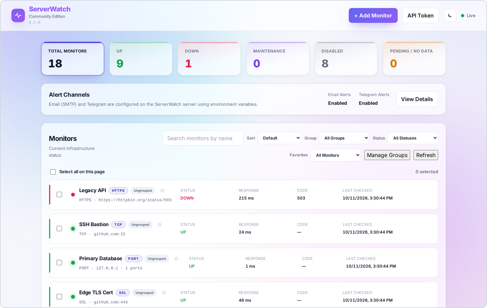
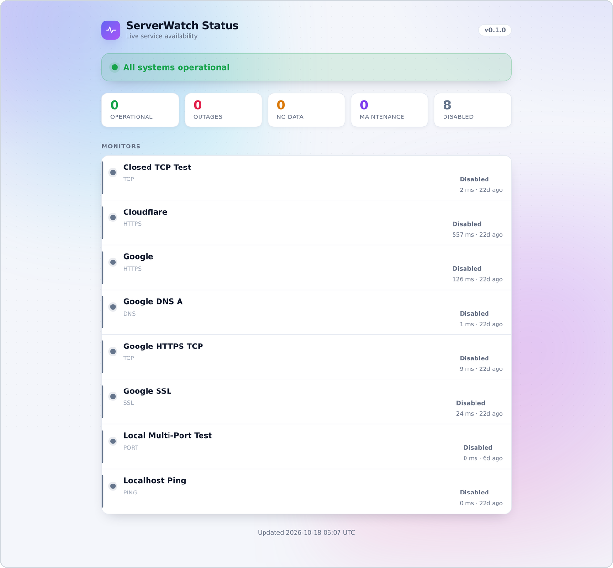

Know the moment
something goes down.
One dashboard for HTTP, ping, TCP, DNS and SSL checks. A single Go binary, a fast React UI, and alerts to email or Telegram — running on your own server.

Everything you need to watch a stack
No agents to install, no vendor account, no per-check pricing.
HTTP & HTTPS
Status codes, response time, redirects and keyword checks against any endpoint.
Ping, TCP & ports
Host reachability and single or multi-port checks for databases, SSH and more.
SSL expiry
Certificate subject, issuer and days remaining, with warnings before renewal.
DNS records
Resolve A, AAAA, CNAME, MX and TXT, and alert when answers change or break.
History & analytics
Per-monitor uptime, response-time charts, ranged stats and maintenance mode.
Alerts & status page
Email (SMTP) and Telegram alerts, plus an optional public read-only status page.
Why self-host ServerWatch?
A focused uptime monitor you can read in an afternoon and run for years.
| Capability | ServerWatch | Hosted SaaS | Heavyweight suites |
|---|---|---|---|
| Your data stays on your server | Yes | No | Yes |
| Single binary + Postgres | Yes | n/a | Often many services |
| HTTP, ping, TCP, DNS, SSL in one UI | Yes | Varies | Yes |
| Apache-2.0, free to self-host | Yes | Subscription | Core only |
| Public read-only status page | Yes | Paid tier | Yes |
| No per-check or per-seat pricing | Yes | No | Often |
Running in two minutes
Docker Compose brings up the app and Postgres together.
# 1. grab the compose + env files curl -O https://raw.githubusercontent.com/smartphpfreelancers-sys/serverwatch/main/deployments/docker/docker-compose.yml cp .env.example serverwatch.env # set POSTGRES_PASSWORD # 2. start the stack docker compose --env-file serverwatch.env up -d # 3. open the dashboard open http://localhost:8080
Prefer bare metal? Download a bundle from the
releases page
and run ./bin/serverwatch behind systemd.

Built in the open
ServerWatch is Apache-2.0 and maintained in public. Stars, issues and pull requests are what keep a small project moving.